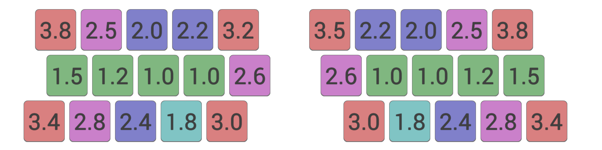
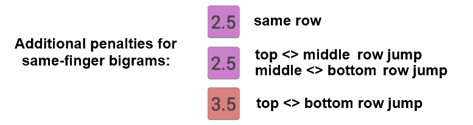

Colemak Mod-DH
A Colemak mod for more comfortable typing.
Colemak Mod-DH - Comparing Layouts
Finding a way to objectively compare keyboards layouts is not an easy task. There are many different factors to consider, as well as how much weight should be given to each factor. Scoring systems are highly subjective.
Nonetheless, here is an attempt to compare some layouts. It uses a fairly simple scoring system that simulates typing a large volume of standard English text¹, and scores each layout according to two factors:
1. A base effort value based on the ease with which each key can be typed.

2. An additional penalty that is incurred for each pair of successive keys that were typing with same finger (i.e. same-finger bigrams). The amount of penalty depends on the distance the finger moves to type both keys, i.e. the row difference between the two keys forming the bigram. 
These are my values based on personal experience, which I think are reasonable estimates. Others may disagree of course, there are some other examples here, here and here. Note also the key efforts defined assume the application of the "angle" mod.
You can try out this Keyboard Layout Analyzer tool (below) to generate statistics using your own input values.
Results
| base effort per key | same-finger bigrams percentage | same-finger penalty | overall score effort per key | |
| Mod-DH (full) | 1.596 | 1.51% | 0.040 | 1.636 |
| Mod-DH (left) | 1.628 | 1.51% | 0.040 | 1.668 |
| Workman | 1.606 | 2.96% | 0.078 | 1.684 |
| Colemak | 1.663 | 1.51% | 0.040 | 1.703 |
| Asset | 1.696 | 2.97% | 0.079 | 1.775 |
| Norman | 1.614 | 6.38% | 0.166 | 1.780 |
| qgmlwyfub | 1.699 | 4.58% | 0.116 | 1.815 |
| Dvorak | 1.793 | 2.53% | 0.065 | 1.857 |
| Minimak-8key | 1.763 | 4.03% | 0.108 | 1.872 |
| Qwerty | 2.192 | 6.57% | 0.185 | 2.376 |
Mod-DH comes out as the winner, but perhaps this is not surprising given the scoring system rewards use of the key locations that Mod-DH optimizes. A cynic might argue that it is easy to win a competition when you choose your own rules! In that case, especially if you disagree with the input weights and penalties, why not try out the tool below with your own inputs to see how it affects the results!
Layout Analyzer Tool
This is a tool for analyzing keyboard layouts, according to the two factors described above. Importantly, you can modify the input values - the effort weights of the keys and the penalties for same-finger bigrams - to whatever you think they should be. Note, it is a Java applet and so requires the Java Plugin to be installed and enabled in your browser. Yeah, I know Java applets are old hat these days, but it was convenient!
To use, select a layout from the list or type in your own (the format is 3 rows of ten characters, space-separated) into the top-left panel. Enter key effort values in the top-right panel, and also three penalty values for same-finger bigrams. The "Analyze" button calculates the results according to the pre-calculated letter¹ and bigram frequency stats.
Notes
¹ Statistics are generated using a corpus which comprises a variety of books from Project Guttenberg, the same as used by carpalx.
Results shown by finger refer to: left-hand (0-4) and right-hand (5-9). Fingers 0/9 are pinkies, 1/8 are ring, 2 /7 are middle, 3/6 are index, and 4/5 (not included in stats) are thumbs.